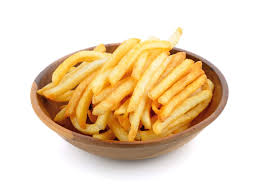

fries

Description
Fries, also known as French fries or chips, are a popular snack made from deep-fried potato strips. They are crispy on the outside and soft on the inside, often enjoyed with ketchup or other dipping sauces.
Ingredients:
- 4 large potatoes
- Oil for frying
- Salt to taste
- Optional: pepper, paprika, garlic powder, or other seasonings
Steps:
- Wash and peel the potatoes. Cut them into thin strips or your desired shape.
- Soak the cut potatoes in cold water for at least 30 minutes to remove excess starch. Drain and pat them dry with a clean towel.
- Heat oil in a deep fryer or large pot to 350°F (175°C).
- Carefully add the potato strips to the hot oil in batches, avoiding overcrowding. Fry until golden brown and crispy, about 3-5 minutes per batch.
- Use a slotted spoon to remove the fries from the oil and place them on paper towels to drain excess oil.
- While still hot, season the fries with salt and any other desired seasonings.
- Serve immediately with your favorite dipping sauce.
Back to Home